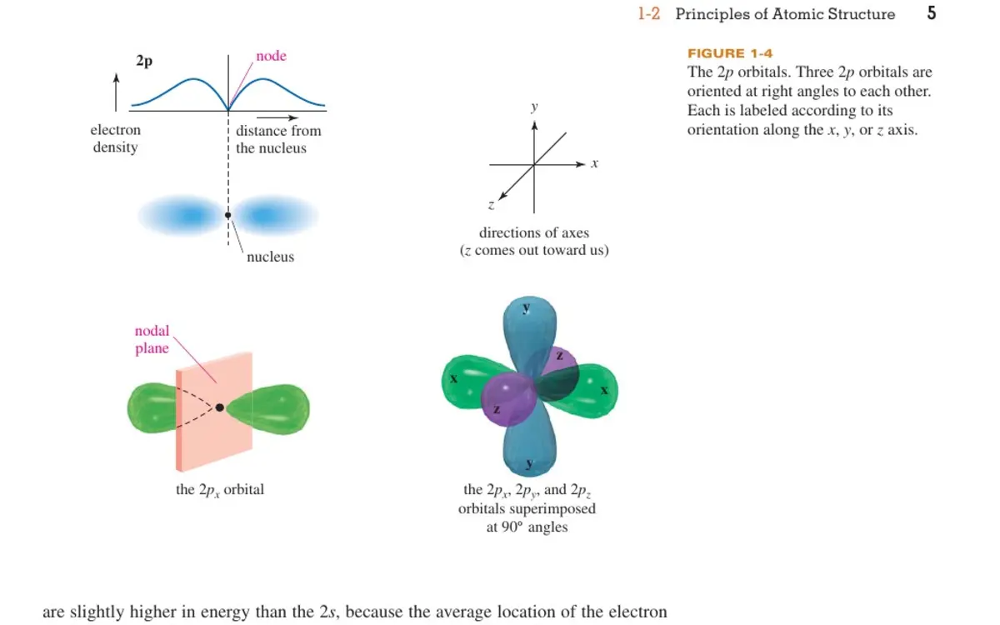
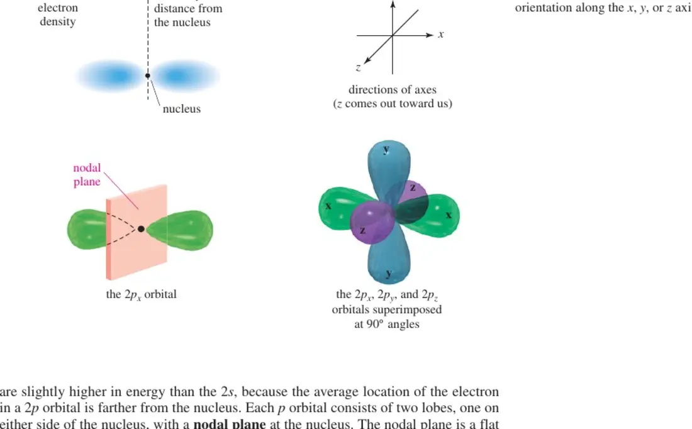
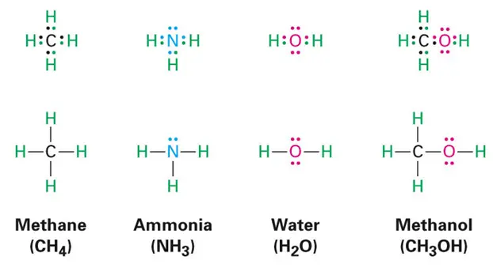

叔丁醇盐碱性强，但位阻大；面对受阻底物时常更倾向夺取质子并发生消除，而不是直接进攻碳中心。
LECTURE 02 · 2026/09/10
酸碱、分子轨道与分子结构
Lewis acid–base chemistry, molecular orbitals, hybridization, geometry and polarity
课堂速记修订原理补充词条交叉链接PPT 与教材图示
共振内容已独立
本课涉及的质子化亚胺、乙酸根、硝基甲烷以及主要/次要贡献式已移回独立专题，避免与分子轨道主线重复。
进入 Resonance & Electron Delocalization 专题 →1. Lewis 酸碱与亲电/亲核性
Lewis 酸（Lewis acid）接受电子对，Lewis 碱（Lewis base）提供电子对。形成配位键时，弯箭头必须从电子对供体画向受体：例如 NH₃ 的氮孤对指向 BF₃ 的缺电子硼。
Lewis base: B: + A ⟶ B→A
这里 B: 表示具有可供给电子对的 Lewis 碱，A 表示具有空轨道、能够容纳电子对的 Lewis 酸；箭头 B→A 记录电子对的来源，不表示键只在一个方向上存在。
亲核体（nucleophile）与亲电体（electrophile）描述的是具体反应中的电子源和电子汇。Lewis 酸碱性更接近“结合一对电子是否有利”的热力学性质；亲核性、亲电性则还受反应路径、位阻、溶剂化、反离子和温度影响，因此更偏动力学。
金属离子可以接受配体孤对形成配位键；若问题不涉及有机底物上的成键步骤，通常直接用 Lewis 酸描述更清楚。
OH⁻ 是 Lewis 碱；在与卤代烷形成 C–O 键的取代反应中，它同时是亲核体。名称取决于讨论的是性质还是反应角色。
亲核体把已占据轨道中的电子密度提供给亲电体的低能空轨道。这个观点将在 HOMO–LUMO 部分统一解释。
2. 分子轨道从哪里来：LCAO
分子轨道（molecular orbital, MO）不是某一根键周围的固定“电子云外壳”，而是允许电子在整个分子中占据的波函数。最简单的近似是原子轨道线性组合（linear combination of atomic orbitals, LCAO）：
ψ+ = cAφA + cBφB
ψ− = cAφA − cBφB
第一次出现的符号：ψ 是形成后的分子轨道波函数；φA、φB 是原子 A、B 的原子轨道；cA、cB 是组合系数，其大小反映各原子轨道对该 MO 的贡献，正负号反映相位关系。波函数本身可正可负，但可观测的电子概率密度与 |ψ|² 有关。

同相叠加使两核之间的电子密度增加，电子同时受到两个原子核吸引，轨道能量低于原来的原子轨道。
异相叠加在两核之间产生节点，削弱核间电子密度，轨道能量升高；用星号标记为 σ* 或 π*。
相位不是电荷
轨道图中不同颜色或“+ / −”表示波函数相位。两个叶瓣都描述电子出现的区域，不能把它们读成带正电和带负电的两半。
3. σ、π 与轨道重叠
两个轨道若沿核间轴端对端重叠，得到 σ 与 σ* 轨道；若两个平行 p 轨道侧向重叠，得到 π 与 π* 轨道。σ 轨道绕核间轴旋转时性质不变，π 轨道包含核间轴所在的节点平面。
重叠必须同时满足三个条件：轨道在空间上能够接触、对称性匹配、能量相近。仅仅“靠得近”并不保证形成强键；如果相位抵消或能量差过大，稳定化会很弱。
两个近似 sp³ 杂化轨道端对端重叠。绕 C–C 轴旋转不要求破坏这根 σ 键，因此可形成不同构象。
一根 σ 键固定原子骨架，两个未杂化 p 轨道侧向重叠形成 π 键。旋转 90° 会使 p 轨道失去平行重叠，所以双键旋转受限。
4. 电子如何填入 MO：键级与磁性
电子按能量从低到高占据分子轨道，并遵循构造原理、泡利不相容原理和洪特规则。把电子放入成键轨道会增强键；放入反键轨道会抵消一部分成键作用。
BO = ½(Nb − Nab)
Nb 是成键轨道中的电子数，Nab 是反键轨道中的电子数，BO（bond order）是 MO 模型给出的键级。H₂ 有两个成键电子、没有反键电子，BO = 1；假想的 He₂ 同时有两个成键和两个反键电子，BO = 0，因此没有净成键稳定化。
MO 理论还能够把磁性直接连到电子占据：只要存在未成对电子，粒子就具有顺磁性。O₂ 基态的两个电子分别占据两个简并 π* 轨道，因此表现为顺磁性；这是简单 Lewis 结构无法自然显示、但 MO 图能解释的经典证据。
5. HOMO–LUMO：把轨道和有机反应连接起来
HOMO 是最高占据分子轨道（highest occupied molecular orbital），通常代表最容易提供电子的部分；LUMO 是最低未占据分子轨道（lowest unoccupied molecular orbital），通常是最容易接受电子的空轨道。
关键相互作用： HOMONu ⟶ LUMOE
Nu 表示亲核体，E 表示亲电体。反应更容易发生在 HOMO 与 LUMO 空间重叠良好、对称性匹配且能级差较小时。Lewis 酸碱用“电子对供受”描述结果；前线轨道理论则进一步解释电子从哪个轨道来、进入哪个轨道以及为什么从某个方向进攻。
亲核体的孤对 HOMO 与羰基的 π* LUMO 相互作用。π* 在羰基碳一端具有可接受电子密度的轨道系数，因此进攻发生在碳而不是氧。
亲核体 HOMO 进入 C–X 键的 σ* LUMO。背面进攻能与 σ* 的大叶瓣有效重叠，同时推动 C–X 键断裂。
6. 杂化：局域成键的实用模型
杂化轨道（hybrid orbital）是同一原子上的 s、p 轨道进行数学线性组合后得到的定向轨道。它适合描述局域 σ 键与孤对方向；MO 则更自然地描述跨越多个原子的离域、成键与反键轨道。两者是不同层级的模型，不互相否定。

电子域近似线形，理想夹角 180°；留下两个互相垂直的未杂化 p 轨道，可形成两个 π 键，例如炔碳。
电子域近似平面三角形，理想夹角 120°；留下一个垂直于平面的 p 轨道，例如烯烃和羰基碳。
电子域近似四面体，理想夹角 109.5°；可用于描述 CH₄ 的四根 σ 键，以及 NH₃、H₂O 中的键与孤对。
sp、sp²、sp³ 的 s 成分依次约为 50%、33%、25%。s 成分越高，电子平均越靠近原子核，相关键通常更短、更强。
7. VSEPR、分子几何与极性
VSEPR 模型先数中心原子周围的电子域：单键、双键或三键各算一个成键域，每一对孤对电子算一个孤对域。先得到电子域几何，再忽略孤对的位置写出分子几何。

排斥强弱通常为：孤对–孤对 > 孤对–成键对 > 成键对–成键对。因此 NH₃ 的 H–N–H 键角约为 107°，H₂O 的 H–O–H 键角约为 104.5°，都小于理想四面体角 109.5°。
分子偶极矩是所有键偶极与孤对贡献的矢量和。具有极性键并不保证整个分子有净偶极：CO₂ 的两个 C=O 键偶极在线形结构中抵消，而折线形 H₂O 中不能抵消。判断极性必须同时看键的极性与三维几何。
8. 三套模型如何分工
最快速地记录价电子、形式电荷、孤对与连接方式；适合反应机理记账，但不能完整表示真实电子密度。
适合预测局域 σ 键方向、电子域和近似几何；对过渡态、离域体系和精确能量的解释能力有限。
把电子放入遍布分子的轨道，可解释成键/反键、离域、磁性和前线轨道控制的反应选择性。
先用最简单的模型解决问题；当 Lewis 图或杂化无法解释实验现象时，再提升到 MO 语言，而不是把任何一个模型当成唯一“真实图像”。
QUESTIONS RECORDED BEFORE NOTE SUBMISSION
9. 课程问答
以下问题来自本次课堂速记中的原始疑问，答案在整理笔记时补全；它们是固定的课程记录，不是聊天输入框。
Q1亲电/亲核性和 Lewis 酸碱是同一组概念吗？
A
不是完全相同，但电子流方向一致：Lewis 碱与亲核体提供电子对，Lewis 酸与亲电体接受电子对。Lewis 酸碱性侧重形成加合物是否有利，偏热力学；亲核性和亲电性侧重某条反应路径进行得多快、从哪里发生，偏动力学并明显受溶剂、位阻、反离子和底物影响。因此多数亲核体是 Lewis 碱，但强碱不一定是强亲核体。
Q2轨道相位是什么？怎样判断？它是怎么“形成”的？
A
相位是波函数的正负号，不是正、负电荷。单个轨道整体乘以 −1 不改变任何可观测量；真正有意义的是两个轨道重叠区域的相对相位。同号区域相长叠加，形成成键组合；异号区域相消叠加并产生节点，形成反键组合。轨道图中的两种颜色通常只是标记相位。相位不是后来附加的性质，而是波函数作为波动解本身的一部分。
Q3节点到底是什么？
A
节点（node）是波函数 ψ = 0 的点、线或面，因此该处的电子概率密度 |ψ|² 也为 0。p 轨道穿过原子核的平面是角节点；反键 MO 在两核之间还会新增节点。节点数和位置决定轨道的形状、相位分区与能量，不能把节点理解成“电子运动时绕开的固定障碍”。
Q4p–p 和 s–p 重叠都能形成 σ 键吗？
A
可以，只要重叠沿核间轴发生、对称性匹配并且轨道能量差不过大。s–s、s–p 和 p–p 的端对端重叠都能形成 σ 轨道；两个平行 p 轨道的侧向重叠才形成 π 轨道。若 p 轨道方向与核间轴不匹配，正负叶瓣的贡献可能抵消，净重叠接近零。
Q5“有极性键”能否直接推出“分子有极性”？
A
不能。入门模型中，极性键通常是产生分子偶极的必要来源，但不是充分条件；还必须把各键偶极按三维方向作矢量相加。CO₂ 含极性 C=O 键，但线形对称结构使偶极抵消，所以分子无极性；H₂O 为折线形，两个 O–H 键偶极不能抵消，因此分子有极性。原速记中的“充分非必要”应改为“通常必要但不充分”。